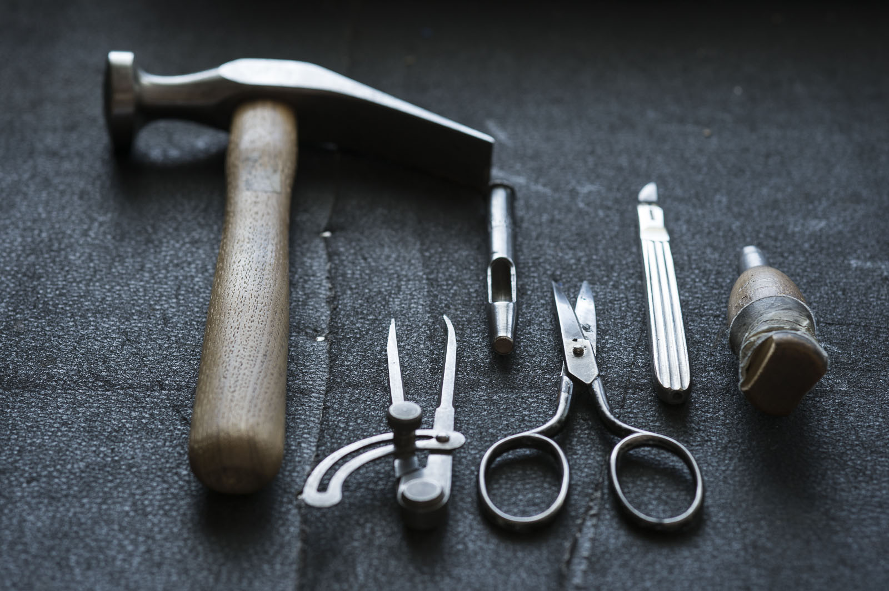
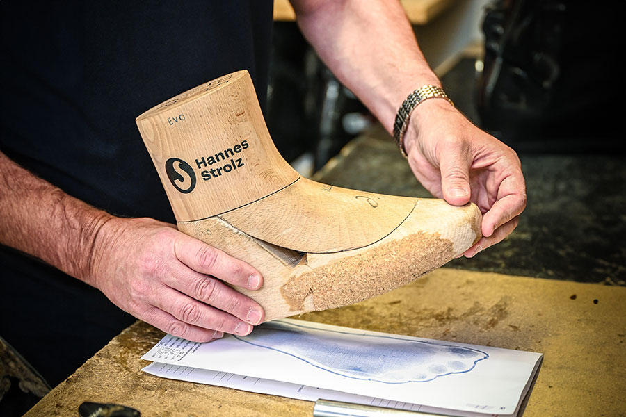
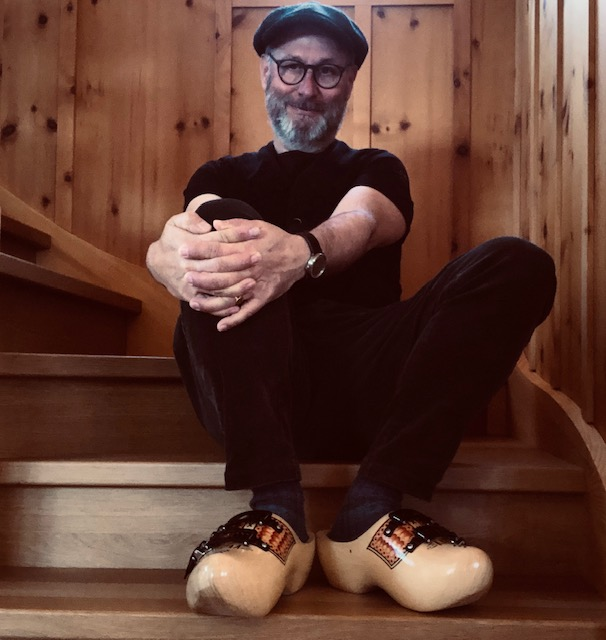

De kunst om het materiaal te veranderen.
Gedurende een lange periode van bloei werd het bedrijf Strolz een belangrijke speler op het gebied van leren skischoenen.
- Eind jaren zestig
Aan het eind van de jaren zestig kwam Strolz voor een grote uitdaging te staan: de eerste plastic skischoenen werden geïntroduceerd: het einde van het leren schoeisel.
Martin Strolz herkende de kansen en risico’s van deze nieuwe technologie: hij had een enorme ervaring met de ambachtelijke traditie van leerbewerking. Maar matrijzenbouw en spuitgieten voor kunststoffen was echter iets heel anders. Zowel technologie als materiaal werd in eigen huis ontworpen voor de productie van grote hoeveelheden. Maar dit was in tegenspraak met de cultuur en traditie van Strolz. Het bedrijf staat voor de hoogst mogelijke kwaliteit van individueel op maat gemaakte skischoenen. Toch zag Martin de voordelen van de nieuwe technologie en wist deze aan zichzelf aan te passen. Slechts vijf bekende fabrikanten van leren schoenen in de Duitstalige wereld slaagden erin zich om te vormen en kunststof skischoenen te produceren.
- 1969
In 1969 lanceerde Strolz zijn eerste eigen plastic schoen. Het model ‘Competition’ werd gelanceerd. Aanvankelijk werd geëxperimenteerd met geplastificeerd leer en patenten werden uitgewisseld met een massaproducent. Om sneller know-how op te bouwen bedacht Martin Strolz zich en hield zich aan het adagium ‘schoenmaker blijf bij je leest’. Hij nam de productie van de plastic schaal terug in eigen hand.

Perfectie en perfecte fit.
De ontwikkeling van het Foam-Fit-systeem, dwz het schuimen van de tussenruimten van de binnenschoen, was ook nuttig bij het individualiseren en aanpassen van plastic skischoenen om een perfecte pasvorm te bereiken. Hoewel dit systeem ook elders werd toegepast, slaagde geen enkele andere fabrikant erin deze techniek zo te perfectioneren.
Strolz koos er voor (net als bij de leren skischoenen) om op maat gemaakte kunststof skischoenen te gaan maken. Zo werd de sprong naar een nieuw tijdperk eindelijk voltooid en kon Martin Strolz het bedrijf nog verder uitbreiden.
Strolz. 100% op maat gemaakt
Strolz is op dit moment de enige echte 100% op maat gemaakte skischoen. Jarenlange ervaring en nieuwe inzichten zorgen voor de beste skischoen ter wereld. Individueel ambachtelijk op maat gemaakt met de beste materialen. Dat is Strolz.


Strolz in de toekomst
De zoon van Martin Strolz, Hannes, leidt het bedrijf sinds 1990. Eerst voltooide Hannes een studie als orthopedisch schoenmaker. Later studeerde hij grafisch ontwerpen in München. Hannes zorgde ervoor dat het ontwerpen en produceren van de skischoenen de kerncompetenties blijven binnen de Strolz-familie. Toen Martin Strolz afscheid nam van het bedrijf, nam Hannes het familiebedrijf over als de derde generatie. Zijn kennis van orthopedie en design was en is nog steeds zijn geheim van het succes. Hannes is ervan overtuigd dat hij de beste instructeur in zijn vader heeft gehad. Al vanaf jonge leeftijd was Hannes betrokken bij productie van Strolz skischoenen.
En net als zijn vader heeft Hannes ook een verandering aangebracht: want als de stijl verandert tijdens het skiën, moeten de schoenen worden aangepast. Toen de carveski’s op de markt kwamen, moesten de skischoenen voldoen aan de nieuwe eisen. De eerste combischoen voor ski’s en snowboards is bijvoorbeeld een ontwikkeling van Hannes Strolz. Maar hij werkt in de traditie en de filosofie van zijn vader en grootvader: individualisering op het hoogste niveau – dat is waar Strolz voor staat.
Strolz heeft geen plannen voor massaproductie. Elke schoen is een uniek product. Het doel is altijd om steeds betere, op maat gemaakte schoenen te maken.
Plan uw afspraak
U kunt online een afspraak maken. U kunt echter ook telefonisch een afspraak maken via: 020-3033866.